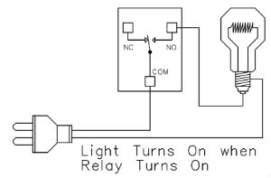
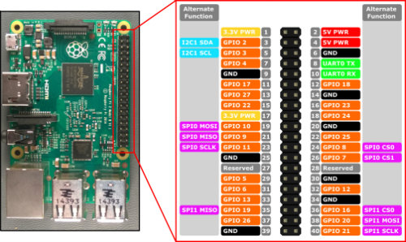

Youtube上看到一个很酷的视频MK smart house（想看请学会翻墙）。自己搜索了下，最开始发现了google assistant sdk for python,于是乎就想利用手上树莓派3来试试，根据官方文档一步步来设置了，运行google-assistant-demo,提问了一些时间天气，都完全没问题。但使用该项服务，也比较麻烦，第一，大陆地区被墙，我开始时运行卡住了，咋回事呀，瞎忙活好久才想起来没有vpn；第二，这个现在不支持中文；第三，每次对话开始使用Ok/Hey google，感觉很二，网上文档较少，也不知道咋改。自己也根据一些例子写了简单的程序来控制卧室的床头灯，效果还不错，关键对我这蹩脚的英文口音识别还挺高。
后来想着自己的IPhone上有siri，而且支持中文，这样不是更方便些。于是网上搜索，发现大神真是多，有个家伙叫KhaosT是个在美留学的中国人，曾在苹果的HomeKit团队实习过，他写了个Homebridge，是用 NodeJS模拟了一个HomeKit Accessory Server，这样不用局限于那些比较昂贵的Accessory了。而且目前有500个之多的相应Plugin，下面是按照github上教程来安装的，过程中遇到了些问题，也找到了解决办法。
安装TightVNC
我的rpi3安装了最新的strech镜像，开机后，设置了无线，以及配置了raspi-config，这里我直接使用了ssh访问，当然如果习惯了图形界面，可以按照下面的这些步骤来安装个VNC： 1 2 3
| sudo apt-get install tightvncserver tightvncserver -geometry 1600x900 :1 #设置密码 sudo nano /etc/systemd/system/vncserver@:1.service #添加
|
粘帖一下内容： 1 2 3 4 5 6 7 8 9 10 11 12 13 14 15
| [Unit] Description=Remote desktop service (VNC) After=syslog.target network.target [Service] Type=forking User=pi #PAMName=login #PIDFile=/home/pi/.vnc/%H%i.pid #ExecStartPre=/usr/bin/vncserver -kill %i ExecStart=/usr/bin/vncserver -geometry 1600x900 %i ExecStop=/usr/bin/vncserver -kill %i [Install] WantedBy=multi-user.target
|
1 2 3 4
| sudo chmod +x /etc/systemd/system/vncserver@:1.service sudo systemctl daemon-reload sudo systemctl enable vncserver@:1 sudo systemctl start vncserver@:1
|
1 2
| sudo apt-get install autocutsel #可以共享剪切板 autocutsel -fork # add to .vnc/xstartup
|
在客户端机器上，可以使用chrome的插件vncviewer来访问。
安装homebridge
更新
1 2
| sudo apt-get update sudo apt-get upgrade
|
安装nodejs
1 2
| curl -sL https://deb.nodesource.com/setup_8.x | sudo -E bash - #目前版本为8.6 sudo apt-get install -y nodejs
|
安装avahi和homebridge
1 2
| sudo apt-get install libavahi-compat-libdnssd-dev sudo npm install -g --unsafe-perm homebridge
|
安装完后，如果当你运行homebridge，出现以下报错： 1 2 3 4
| module.js:472 throw err; ^ Error: Cannot find module '../build/Release/dns_sd_bindings'
|
解决方法： 1 2 3
| sudo npm install --unsafe-perm mdns cd /usr/lib/node_modules/homebridge sudo npm rebuild --unsafe-perm
|
配置config.json
在home目录下的./homebridge目录下新建config.json:（特别注意格式，否则无法读取） 1 2 3 4 5 6 7 8 9 10 11 12 13
| { "bridge": { "name": "CQHome", //可选修改 "username": "B8:27:EB:A0:2C:A1", //修改，为pi的mac地址 "port": 45536, //可选修改 "pin": "031-45-188" //可选修改 }, "platforms": [ { }] "accessories”:[{ }] }
|
其中的platforms和accessories，可在安装homebridge-plugins后来进行修改添加配置
安装摄像头
由于目前手头只有个camera v2.1, 于是先拿这个来试试效果，当然video streaming这块也不懂，似乎也复杂。找了一个homebridge-camera-rpi，测试发现视频传输很流畅，一开始一直延迟较高，后来发现因为vpn打开的原因，好了，具体的安装及配置参考这里。
在rpi3上运行homebridge，然后iphone手机打开home app，添加时候需要输入8位code，此处即为配置文件中的pin码。
控制台灯, 温湿度
在某宝上购买了些电子原件，什么继电器，温湿度传感器等，东西都比较便宜，继电器貌似才3块多点，这里要注意其支持5v，因为Pi的输出只有3.3v和5v两种。继电器上的接口，一端为NC/COM/NO，按如下图连接：  另一端有DC+/IN/DC-，DC+/DC-连接5V电源，IN连接Digital PIN，下图为Pi的GPIO分布图：  温湿度传感器选用了AM2302,最好选用下图这种已经接好电容电阻： 连接至两个设备的GPIO号最好记下来，我使用的是GPIO4(温湿度）和GPIO27(继电器）。
温湿度传感器
安装Plugin，这里使用的是homebridge-dht和homebridge-gpio-wpi2, 1 2
| sudo npm install -g homebridge-dht sudo npm install -g --unsafe-perm homebridge-gpio-wpi2
|
对于homebridge-dht设置读取传感器数据的步骤太复杂，这里我做了些修改，使用python来实现。 1 2 3
| git clone https://github.com/adafruit/Adafruit_Python_DHT.git cd Adafruit_Python_DHT sudo python setup.py install
|
接下来编写程序读取数据，这里为/home/pi/pydht22.py： 1 2 3 4 5 6 7 8 9
| import Adafruit_DHT as dht import sys pin = int(sys.argv[1]) sensor = dht.DHT22 humidity, temperature = dht.read_retry(sensor, pin) if humidity is not None and temperature is not None: print '{0:d} {1:0.1f} c {2:0.1f} %'.format(0,temperature, humidity) else: print '{0:d} {1:d} c {2:d} %'.format(3,0,0) #格式是为了保持与Plugin一致
|
修改plugin程序： 1 2 3 4 5 6 7
| cd /usr/lib/node-modules/homebridge-dht/ nano index.js #找到以下位置并修改: .... dhtExec = config.dhtExec || "dht22"; #将dht22改为python，当然其实也可以在配置文件中指定 ... exec(dhtExec, ['-g', this.gpio], function(error, responseBody, stderr) { #修改['-g', this.gpio]，去掉’-g‘，改为你的dht22.py文件的绝对路径,这里是/home/pi/pydht22.py
|
保存退出，接下来可以修改~/.homebridge/config.json文件，在accessories里添加： 1 2 3 4 5 6
| { "accessory": "Dht", "name": "dht22", "name_temperature": "Temperature", "name_humidity": "Humdity", "service": "dht22", "gpio": "4" }
|
运行homebridge程序，然后在IPhone的Home程序里添加即可。
继电器控制
按照homebridge-gpio-wpi2的github上说明操作了，结果出现以下错误： 1 2
| Unable to determine hardware version. I see: Hardware : BCM2835 - expecting BCM2708 or BCM2709. Please report this to project@drogon.net
|
估计是版本太低，于是手动安装了最新版： 1 2 3 4 5
| sudo apt-get purge wiringpi git clone git://git.drogon.net/wiringPi cd ~/wiringPi ./build pigo -v #这时候是2.4.4版本
|
可以正常使用。
展示

Siri语音测试: 1 2 3 4 5 6 7 8 9
| Me:打开卧室灯 Siri:好，灯已打开 Me:卧室灯状态 Siri: 你的灯当前已打开 Me：卧室温度 Siri：你的“CQHome”家中卧室温度是29℃ Me:卧室湿度 Siri:湿度的这项数据现在是70% ....
|
本文链接：http://cequn.wang/2017/10/10/树莓派3上运行Homebridge/
------------------------------------------------------------------------------------------------------------------------------
↑
欣赏此文？求鼓励，求支持！
------------------------------------------------------------------------------------------------------------------------------